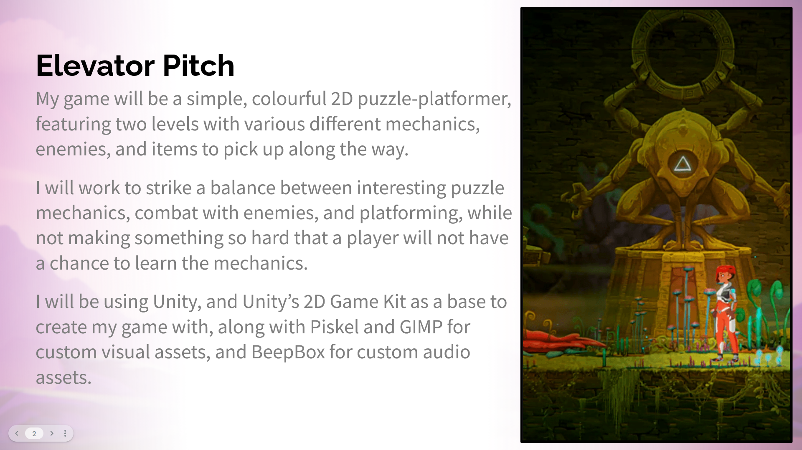
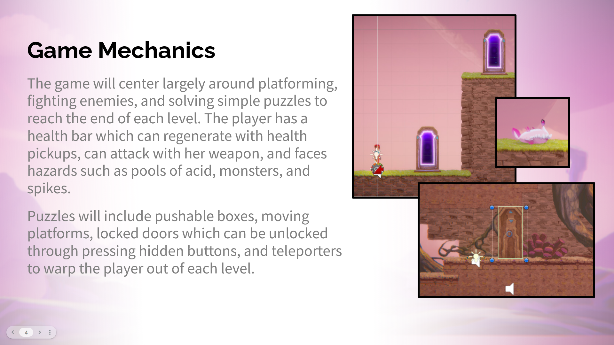
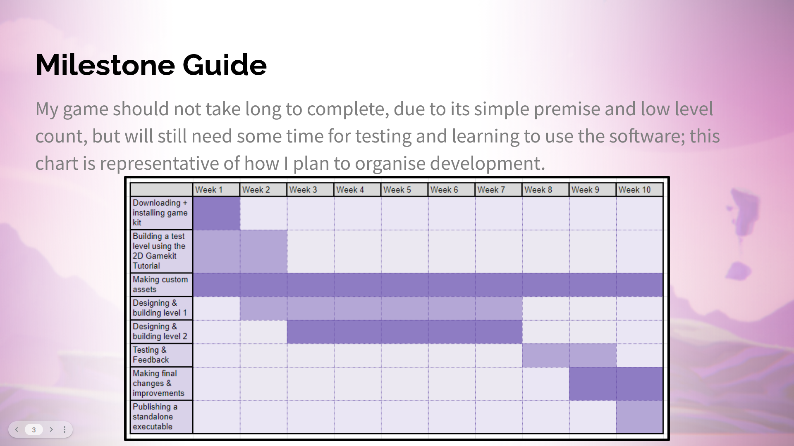
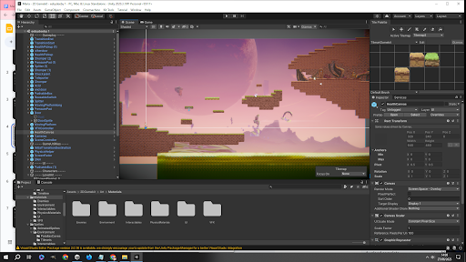
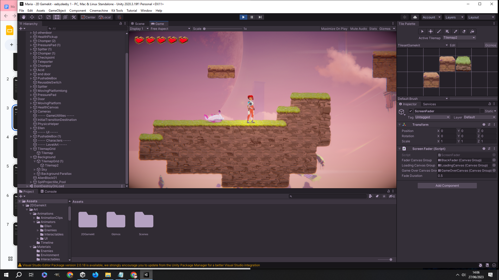
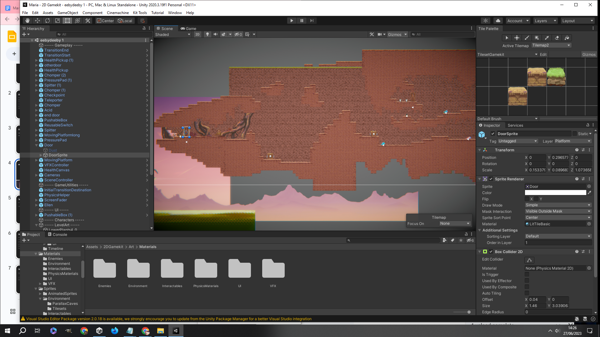
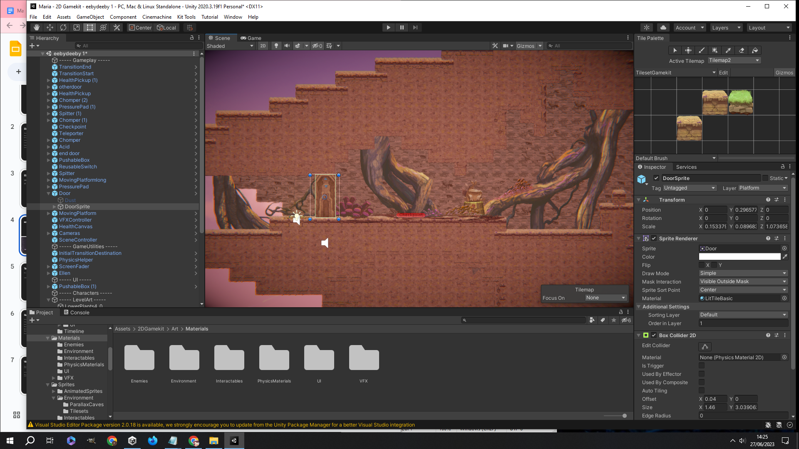
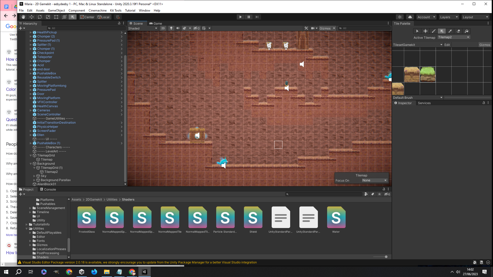
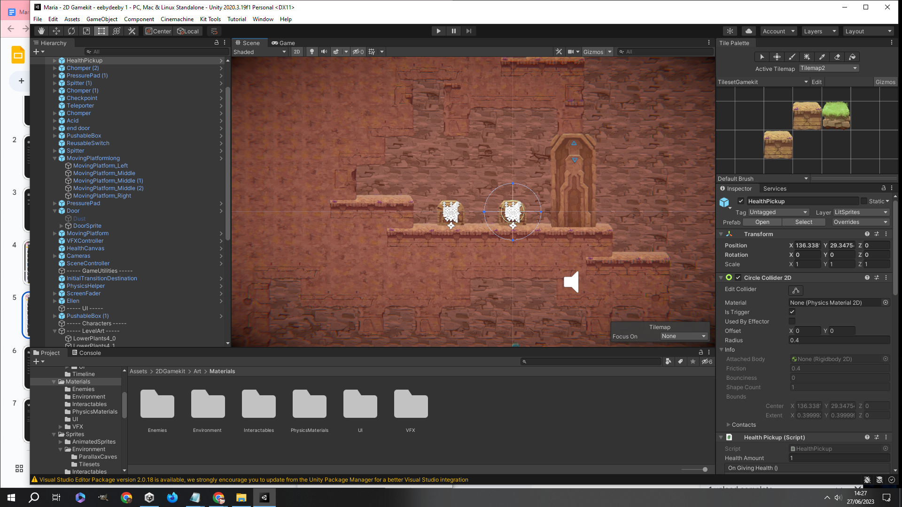

205 - Meeting a Digital Media Brief
Navigation
Research and Assessment
(I) - Researching and briefly defining some key terms, with the context of game development.
Client
A client is either an organisation or individual who purchases/receives services from a developer.
Brief
A brief for game development is a document shared with developers that outlines the clients requirements and the core concepts and details of a game project.
NDA
An NDA, or non-disclosure agreement, is a legal contract that establishes confidentiality relating to parts or all of a product, development process etc.
(II) - Comparing Unity and Unreal engine.
- The Unity engine is a cross platform game engine developed by Unity Technologies and released in 2005.
- Unreal Engine is another game engine, developed by Epic Games and released in 1998.
- Both engines share some similarities, such as being multi-platform and allowing users to develop games for console, PC, mobile, and VR platforms, but also have their differences.
- They started in different places, with Unity being initially designed for development on Mac OS X, and Unreal Engine being developed for creating first-person-shooter games using PC.
- Unity is designed with both 2D and 3D games in mind, while Unreal focuses on 3D games. Unity's primary programming language is C#, whereas Unreal Engine uses C++.
(III) - Writing three short reviews of games that I have played or have otherwise heard of.
Minecraft
Minecraft is a game that has undoubtedly had an immense impact on its genre and on gaming as a whole. It's the first name most think of when an open world sandbox is mentioned, and for good reason. First fully released in 2011, and having been developed in Lightweight Java Game Library since 2009, through a combination of its iconic art and graphical style, its simple core game concept that allows for limitless expansion, and regular updates with new features, the game has remained timeless and popular even today. The fact that worlds consist entirely of blocks also lends well to an instantly identifiable style that doesn’t get too far in the way of builders’ visions, and makes a perfect foundation for a sandbox game where building and breaking the environment is involved in most of the gameplay.
Even before a new world is created, there are choices to make in how you want your experience to be shaped. Options for difficulty are standard, including a permadeath “Hardcore” mode and safe “Peaceful” mode, but you can also select between a Creative or Survival world; Survival introduces a health and hunger bar, resource management, and threats like monsters to create challenge and incentives for different playstyles, while Creative is a true sandbox, with your player having access to every block in the game, godmode, cheats and commands. This mode allows for ultimate creative expression over all else, and that contrast with Survival allows for much more diversity in how Minecraft can be played. Each mode appeals to a different kind of player, so there's something for everyone. There is a story to Minecraft, too; it's not made obvious, but players who are observant and interested can piece together silhouettes of the world's past through subtle hints - a method well suited for a game built upon its thriving community, and once again appealing to a wider range of people.
In all game modes, the open-endedness of Minecraft makes itself apparent from the beginning. The fundamental gameplay is simple - build or break blocks, pick up items or blocks to gather supplies, craft new items and tools out of them, use tools to better fend off enemies - but the things players can achieve with them are infinite. You're essentially dropped in a vast, largely undisturbed world, without being explicitly told the "correct" thing to do, and there are already multiple options available to you. In Survival, there is some more structure; ideally, you want to gather resources and make a base, but otherwise you can completely neglect the common goal of “beating” the game forever, and still not be playing Minecraft incorrectly, and this is what gives it so much of the replay value that keeps it interesting after over a decade.
A downside of all of that choice however, is that it can overwhelm new players, and there are some issues with newbies and especially younger beginners being totally lost on what to do without just relying on other players; thankfully, some decent tutorials are still made accessible, helping resolve this to a degree. After getting your initial bearings through tutorials, the open-ended gameplay becomes easier to navigate and the rest of the game can shine, though there are still some opaque mechanics that are tricky to understand without the community’s help.
Pikmin
Pikmin (2001) is a real-time strategy game published by Nintendo for the Gamecube system, which would later re-release for the Wii in 2009. With a captivating premise, unique gameplay, and a blend of cartoonish, quirky, and grounded atmospheres accented by the memorable design Nintendo games are often known for, the game soon gained a diverse cult following and became the first in an iconic series that is still ongoing today.
In Pikmin, you play as Captain Olimar, an employee of Hocotate Freight, who is on intergalactic vacation before his ship, the S.S. Dolphin, is struck by a comet. Having crash landed on an undiscovered planet only known as PNF-404, with his ship destroyed and its missing parts scattered all across the planet, Olimar discovers a species of animal-plant hybrid he names Pikmin along with the ship-like lifeforms, or Onions, that they come from, and must recruit them to help retrieve each component and escape the planet before his life support system runs out. The story is told in an immersive-feeling way, mostly told through Olimar’s journal entries at the end of the day where he writes his thoughts and feelings about the situation, sometimes commenting on the particular events that happened during the prior day, and the player’s ability to complete the game’s objectives will have an effect on how the ending plays out.
As the player, you are given a 30-day time limit to build up your squad of Pikmin, face the hostile wildlife, and find the missing 30 ship parts. The gameplay involves exploring different areas, leading your Pikmin to complete various tasks by throwing or rallying them - defeat enemies, break down walls, carry back the lost ship parts, bring food to the Onions to sprout new Pikmin, etc. At the end of a day, Olimar and all Pikmin must enter low orbit around the planet to avoid the nocturnal threats, meaning all Pikmin have to be near the Onions or with Olimar at the end of the day in order to survive the night. There are three types of Pikmin, too, each with their own unique benefits - Red Pikmin deal more damage and are immune to fire, Yellow Pikmin can carry bombs and be thrown to high places, and Blue Pikmin can traverse watery areas safely. Keeping your Pikmin alive, recuperating losses, and using the different types effectively are all necessary skills the player learns over time, to keep ahead of the looming 30 day limit.
Where most real-time strategy games feature the player as an almost godlike spectator above the world, controlling and watching everything from a distance, Pikmin instead opts to place the player directly in the world, personally controlling Olimar as he then leads the Pikmin forward to explore and complete each task. This limitation to Olimar’s perspective creates more emphasis on needing to plan your moves efficiently, as you can only be in one place at one time, and allows the player to connect better with his story, which is a significant aspect of the game. The environment design achieves a similar end; the setting of PNF-404 puts the player in an ant's-eye view of what is implied to be a post-apocalyptic Earth - this way, Pikmin puts the same unique and refreshing spin on its environments as it does for gameplay. by taking a realistic portrayal of our natural world and mixing in the game's own quirks and style through strange creatures like the Pikmin, then combining that with the player's shrunk-down perspective, it takes something familiar, then alters and recontextualizes it just enough to allow the world to feel just as alien to the player as it would be to Olimar.
Despite all the positives, Pikmin was still the first of its kind, and came with some balancing issues. Out of the three types of Pikmin, some are better designed for than others. Red Pikmin are the most useful overall with their fighting power and protection against one of the quickest-killing hazards in the game, and there are a good number of areas that only Blue Pikmin can handle, but Yellow Pikmin get the short end of the stick. They only show their usefulness by taking down tough walls or enemies with bombs or grabbing a few high-up parts, both of which only require a few Pikmin. For this reason, most players only really find themselves using Reds and Blues, making the gameplay a little less diverse.
Pikmin is also considered on the difficult side - namely for new players, with the 30-day time limit proving too stressful for some. This is also likely the reason a strict day limit was never reintroduced to the series. Some enemies and hazards in the game exacerbate the difficulty, with foes such as the Wollywogs and Smoky Progg being able to wipe out massive amounts of Pikmin at a time. The hazards are more unforgiving here than in any other Pikmin game, with Pikmin burning and drowning in seconds without help. Accidental bomb-rock explosions can wipe your entire squad, which can happen often to unsuspecting players due to their obtuse mechanics. This, plus the time limit, adds up to a hard experience for newcomers, which is unideal and why many recommend playing the series in reverse-chronological order.
Ōkami
Ōkami (2007) is a visually striking action-adventure game, recognised for its captivating art style inspired by East Asian traditional ink wash painting (sumi-e), alongside unique gameplay mechanics and a well-crafted narrative inspired by Japanese folk tales and mythology. Developed by Clover Studio and published under Capcom, the game has long been highly praised despite poor initial sales, eventually receiving HD ports to modern platforms, signifying the game's long-standing legacy as one of gaming's masterpieces.
The visual style of Ōkami is what stands out the most upon first glance; it's no understatement to say that each frame looks like a painting. Bold, flowing brushstrokes both foreshadow and call back to the player's own Celestial Brush ability, in such a way that the player naturally sees every environment as a canvas. Despite the cel-shaded, ink-brush look originating from necessity, what with the hardware limitations of the PS2, it's the absolute opposite of a detriment to the game, giving the game its identity, inspiring the setting and narrative, and serving as the key factor that ties together the contrasting elements of the world without losing cohesion. Rather than adapting the otherworldly into something realistic, Ōkami opts to do the opposite. The beasts and gods all get to be just as fantastical as in the folk tales they're from, because even the flowers and trees get to share that style - reducing realism yet creating immersion at the same time.
Players follow Ōkami Amaterasu, a wolf incarnation of the Shinto sun goddess, as she is awakened from her century-long dormancy to restore balance to a world gripped by an ancient evil known as Orochi; a terrible eight-headed serpent who, once sealed away, has returned. The game takes players through various regions in Asuka period Nippon (Japan), as Amaterasu discovers the extent of that great curse which ravages the land, uncovers the truth behind Orochi's power, while meeting countless unique characters along the way, who each their own role in the story. One such character is her companion Issun, who plays a pivotal role while also bringing a lot of light-hearted moments and humour. Inspired by the story of "Issun-bōshi", or "One-sun Boy", Issun is an inch-tall wandering artist much too smug for his size, who tags along with Amaterasu (or "Ammy" as he calls her), at first only aiming to learn the Celestial Brush techniques alongside her, but becoming more and more helpful as the story goes on. Neither Ōkami's story nor gameplay are truly complete without the cast of NPCs, as Amaterasu has long been asleep and will need the help of both gods and mortals on her journey to become as powerful as she once was. Each Celestial Brush technique the player gains must be learned from various other gods across Nippon, and although ordinary beings don't recognise Amaterasu, thinking of her as merely a wolf, it's still possible to assist them and earn their praise, which takes the form of a currency used to gain valuable in-game upgrades.
Much of Ōkami's gameplay is modelled after The Legend of Zelda, with a combination of puzzle-solving, exploration, platforming, and combat, while adding its own unique twist with the Celestial Brush skill. Once received, this mechanic opens up a realm of possibilities, which only expands further with each brush technique Amaterasu learns over the course of the game. Using Celestial Brush pauses the game, pulling the screen away and framing it as like a canvas, which the player can paint on to activate different abilities, create objects, and solve puzzles. For instance, drawing a circle in the sky when it's dark will summon back the sun and make it day once more, and drawing a sharp line across an object or monster can slice it in half. This feature alone does wonders to make Ōkami's gameplay memorable, with how versatile and easy to understand it is and how well the game's design is made to compliment it; the game doesn't have to prompt players for every use of the brush, because it's always available and easy to experiment with, so players become accustomed to using each technique on their own, creating a natural sense of progression.
Overall, Ōkami is a game with incredible polish, with its gameplay, design, and narrative all being excellent, it's hard to find something to dislike. Depending on the platform being played on and the player's individual tastes, some may find the controls for executing the Celestial Brush techniques quite finicky, especially for those using motion controls. Thankfully, the gameplay doesn't often demand too much precision in that aspect.
(IV) - Answering questions about my own game relating to its intended demographic, budget, and resources.
In terms of intended destination and market, I aim to have this game appeal to fans of the 2D puzzle-platformer genre, and those interested in the combination of exploring and puzzle solving in games. As I am a solo developer, I will not consider nor require a budget for this project. As for resources, the game will be made using the Unity game engine, with necessary /assets either sourced from Unity's 2D Game Kit, or being made in GIMP or Piskel.
Fulfilling a Brief
(I) - Creating a Google Slides presentation about my game that follows a brief provided, and providing some screenshots of the slides.
   (PRESENTATION LINK)
(II) - Taking screenshots of my level development process, and of the game being played.
uhhh video link goes here      
Review
Tutor Feedback
Maria’s level has been developed very nicely. The scale is a decent size, and they have taken their time in choosing nice décor in specific areas which adds a nice bit of variety visually for the player as they progress. The game includes enemies and some level movement systems, as well obstacles like closed doors where the player must locate a pressure pad in order to progress to the final area. Interesting ways to kill enemies such as moving heavy objects so they fall and kill the enemy have been included, which was a nice touch!
Suggested Improvements
I feel that Maria could have taken the decoration for her level a step further - giving each area of her level more attention so that the player really feels like they’re moving into something different as they progress. Maria could have added more enemies the further the player progresses through the level, as this would create an increase in difficulty for the player the further they get. If Maria had more time to develop their game, including a second or even 3rd level with a different aesthetic style and level design would have also been good.
Self Evaluation
Overall, how did you find making the game? Was it difficult, did you find certain parts frustrating? or did you find it fairly easy to get to grips with? Why? - I found using the 2D Game Kit not overwhelmingly difficult but not easy either; I struggled with learning how to use certain parts effectively, and level design was a challenge when I was still only getting to grips with using the provided tools, leading to a lot of discarded levels and ideas.
Do you agree with the feedback received from your tutor, and why? - I think the feedback I received was overall accurate, as the task was completed and there was some variety of game mechanics on display, though there is also room for improvement. The criticisms about needing more decorations or enemies, and only having one level are some I share, and ideally I would add these to make the experience better.
If you were to do this task again, would you do anything differently, and why? - If I were to redo this project, I might start by mapping out the ideas I have on paper, and use it as a reference so that I don't forget, or get lost and not know how close I am to finishing the level, and so that I can work faster to have more time to add things such as decorations and better visual elements.
What skills could you work on gaining/improving in order to to engage with this project better? Briefly - how would you go about acquiring these skills, and why these skills? - The skills I think would be most useful for doing projects like this in the future are understanding more game/level design concepts, and how to better use Unity to make use of the tools and options it provides. This is because a lot of the things I struggled with were related to not knowing Unity well, or not understanding how something may feel to play without using trial and error. These could be acquired by looking at tutorials/explanations/videos on the topics, or by actively practising creating more levels in Unity.